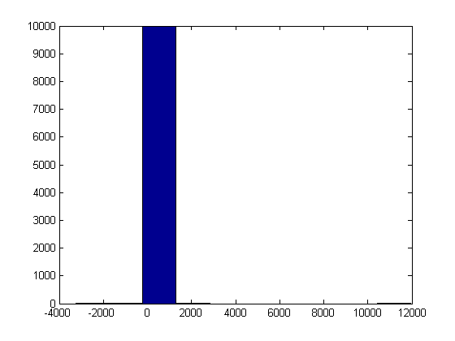
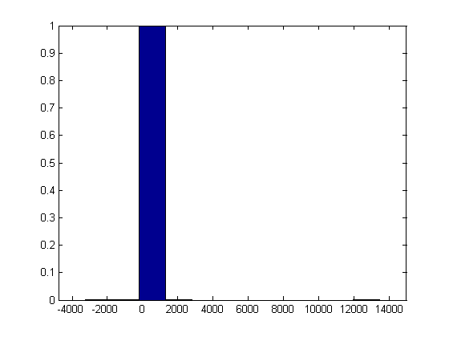
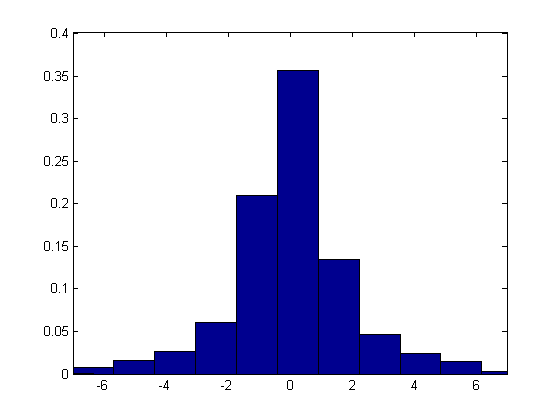
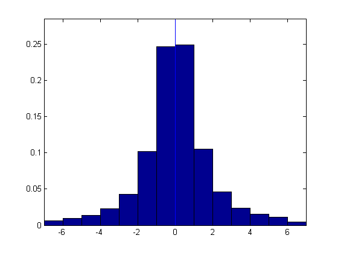

Contents
Set histogram display options
clear opt
opt.pmin = 5;
opt.pmax = 95;
opt.xmin = -7;
opt.xmax = 7;
Generate data (random sample from the standard Cauchy distribution)
x = trnd(1,10000,1);
HIST: all values of x shown, default number of bins = 10
hist(x)

HISTF: top and bottom 1% excluded
histf(x)

HISTF: top and bottom 5% excluded, x-axis limits set at [-7,7]
histf(x,opt)

HISTF: top and bottom 5% excluded, x-axis limits set at [-7,7], bin size = 1, x = 0 marked
opt.dx = 1;
opt.xmrk = 0;
histf(x,opt)
